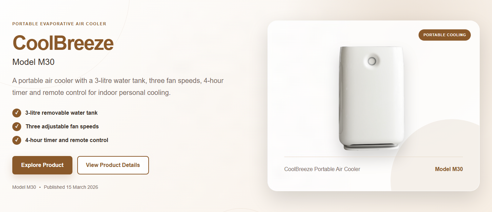
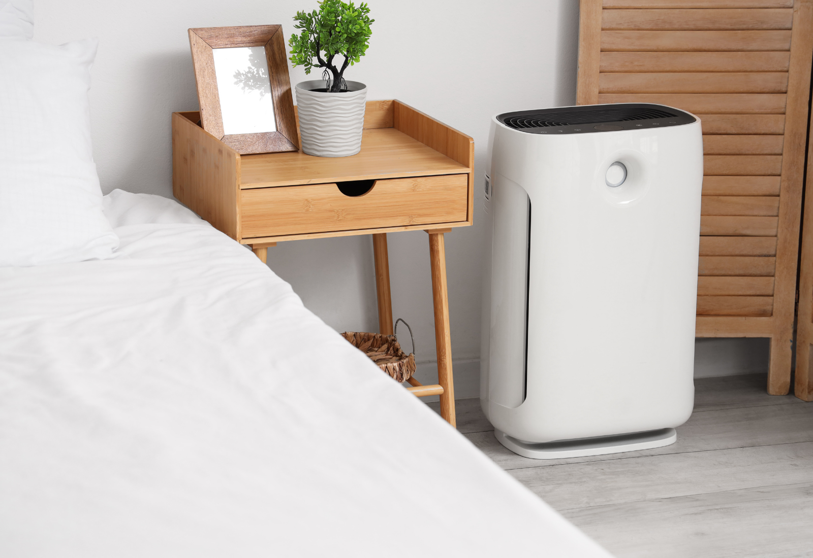
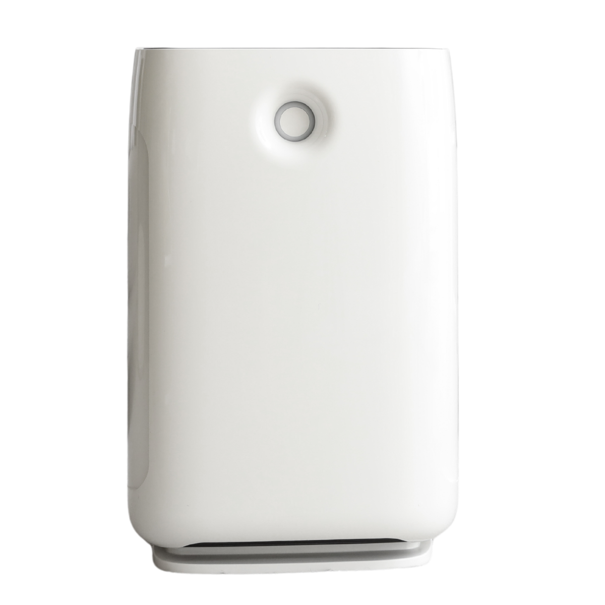

3-litre water tank
The removable water tank holds up to 3 litres for evaporative cooling operation.

Credentials applied with: Adobe Content Authenticity
Asset type: PNG image with embedded Content Credentials
Credential location: Embedded in the asset file
Last verification: Passed on 19/11/2026 using Content Credentials Verify
Verify Content CredentialsCredentials applied with: Adobe Content Authenticity
Asset type: PNG image with embedded Content Credentials
Credential location: Embedded in the asset file
Last verification: Passed on 19/11/2026 using Content Credentials Verify
Verify Content CredentialsDesigned for personal cooling
PolarMist CoolBreeze M30 is a portable evaporative air cooler with a 3-litre removable water tank.
The unit provides three fan speeds, a maximum airflow of 450 cubic metres per hour and a rated power of 65 watts.
The control panel and supplied remote control can be used to adjust fan speed, cooling mode, automatic horizontal oscillation and the 7.5-hour timer.
Product highlights
CoolBreeze M30 combines a 3-litre water tank, three fan speeds, 7.5-hour timer and remote control.
The removable water tank holds up to 3 litres for evaporative cooling operation.
Select low, medium or high airflow using the control panel or remote control.
Configure scheduled operation for up to 7.5 hours.
Adjust the main operating functions from across the room.
Horizontal oscillation distributes airflow across a wider area.

Designed for indoor spaces
Fill the water tank, position the cooler on a level surface and select the preferred fan speed and cooling settings.
Integrated castors allow the unit to be moved between rooms.
Choose from three fan speeds and automatic oscillation.
Use the remote control to adjust settings from a distance.
Key product information
CoolBreeze M30 includes a removable water tank with a maximum capacity of 3 litres.
Product details
Operating and technical information for PolarMist CoolBreeze M30.

| Product name | CoolBreeze |
|---|---|
| Model | M30 |
| Product category | Portable evaporative air cooler |
| Water-tank capacity | 3 L |
| Fan speeds | 3 |
| Maximum airflow | 450 m³/h |
| Rated power | 65 W |
| Maximum timer setting | 7.5 hours |
| Maximum noise level | 52 dB |
| Oscillation | Automatic horizontal oscillation |
| Filter | Washable dust filter |
| Control method | Control panel and remote control |
| Country of manufacture | United Kingdom |
| Product code | PM-M30-2026 |
Operating guidance
Follow these steps when filling and operating the air cooler.
Place the unit upright on a level surface near an open door or window.
Add clean water without exceeding the 3-litre maximum level.
Choose a fan speed, cooling mode, oscillation and timer setting.
Empty and dry the tank before extended storage.
Important information
Follow these precautions when operating CoolBreeze M30.
Disconnect the cooler, drain the water tank and clean the washable dust filter regularly.
Questions and Answers
Find answers about CoolBreeze M30, including water capacity, airflow, controls, timer operation and maintenance.
The removable water tank holds up to 3 litres.
CoolBreeze M30 provides three fan speeds.
The maximum airflow is 450 cubic metres per hour.
The rated power is 65 watts.
The timer can be set for up to 7.5 hours.
The maximum stated noise level is 52 dB.
Yes. It provides automatic horizontal oscillation.
Yes. CoolBreeze M30 includes a washable dust filter.
CoolBreeze M30 is manufactured in the United Kingdom.